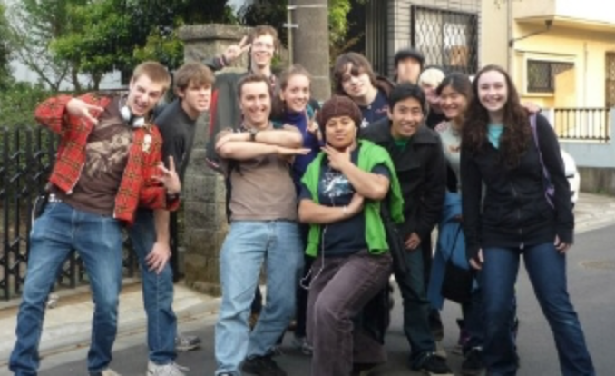

Kanto Region
Tokyo (Central Tokyo)

Email: info@ywamtokyo.org
Website: http://www.ywamtokyo.org/
YNET (East Tokyo)
YNET
1-28-21 Kosuge, Katsushika-Ku
Tokyo,Japan 124-0001
Tel. 81-3-3690-4815
Email: ywamnet@gmail.com
Website: www.ywamnet.com

Email: info@ywamtokyo.org
Website: http://www.ywamtokyo.org/
YNET
1-28-21 Kosuge, Katsushika-Ku
Tokyo,Japan 124-0001
Tel. 81-3-3690-4815
Email: ywamnet@gmail.com
Website: www.ywamnet.com